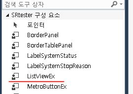
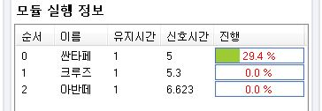

最近做了一个项目，需要在C#的ListView中实时显示数据进行程度，经过多方查找，可以重构ListView，在其中通过绘制进度条来显示数据读取程度。记录如下：
编写组件，并将其添加到工具箱内
代码如下：
1 | public partial class ListViewEx : System.Windows.Forms.ListView |

添加Timer控件，设置对进度条数据的刷新。
调用方法
1 | private void Form1_Load(object sender, EventArgs e) |
